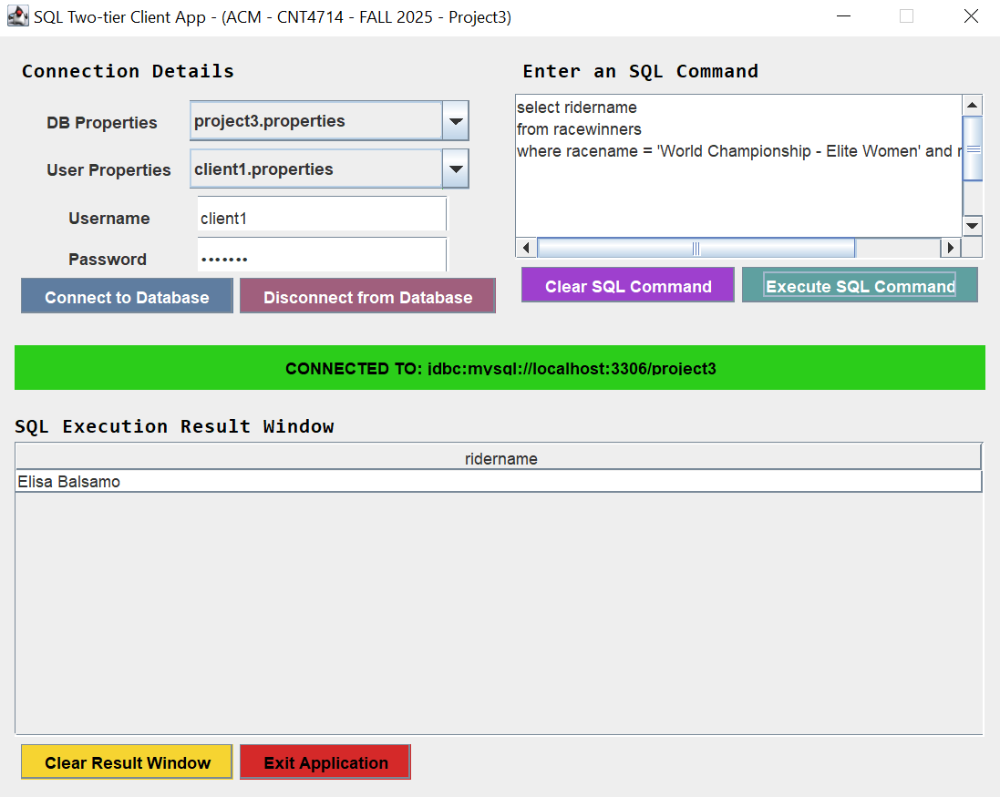
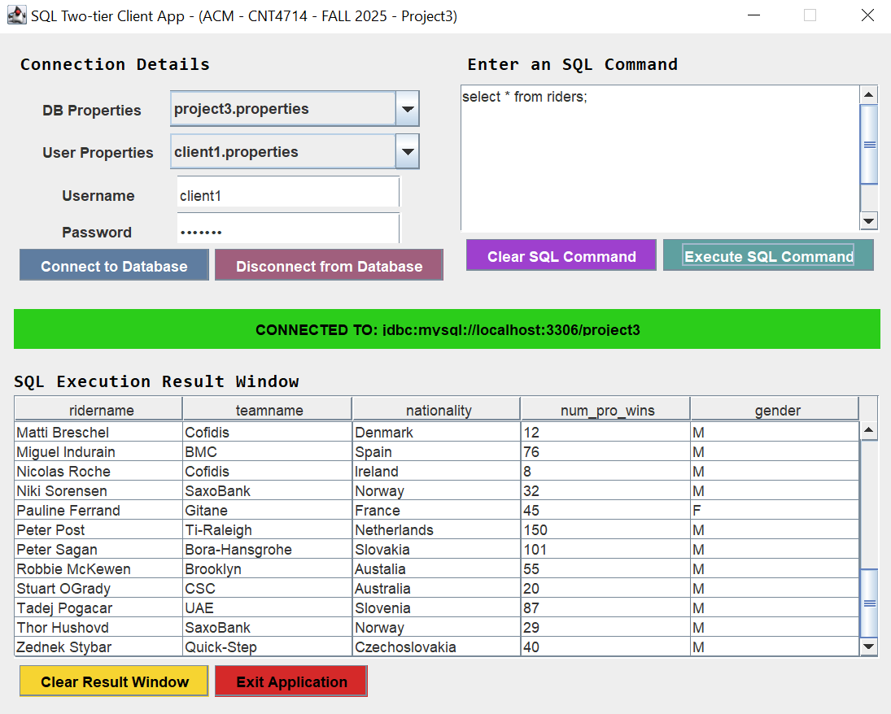

Two-Tier Client-Server for CNT4714 - Enterprise Computing
The goal of this project was to create a two-tier java based client-server applications that would interact with a MYSQL
database utilizing JDBC for the connectivity. For the project I made Java-based GUI for the front end of the application
for the client to connect to the MYSQL server via JDBC and then they would be able to execute various SQL commands against
different databses based on the permissions they had. The skills I learned from this project were how to use, create, and
manage a MYSQL database as well as how to create JDBC application that can connect to a MYSQL database on the same network.

